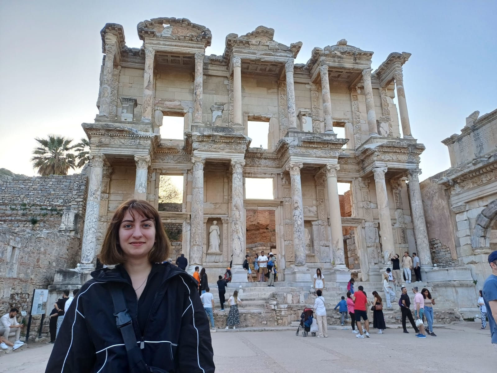

Hakkımda
Ben Doğa. Kendimi etkili iletişim, problem çözme ve liderlik
becerilerine sahip, hırslı ve motive bir birey olarak tanımlıyorum.
Başarılı bir kariyer inşa etmek için tutkulu bir şekilde çalışıyorum.
Yazılım dünyasına olan ilgim, beni sürekli olarak bu alanda gelişmeye
ve yeni şeyler öğrenmeye motive ediyor. İletişim becerilerim ve takım
çalışması ruhum, farklı disiplinlerden insanlarla etkili bir şekilde
işbirliği yapmama yardımcı oluyor.
Her zaman açık fikirli ve esnek bir yaklaşıma sahibim, böylece değişen
koşullara hızlı bir şekilde uyum sağlayabiliyorum. Bir problem
karşısında asla pes etmem ve her zaman alternatif çözüm yolları
ararım. Amacım, şirketinize katkıda bulunmak ve kendimi sürekli olarak
geliştirirken, takımımın ve organizasyonun başarısını sağlamaktır.